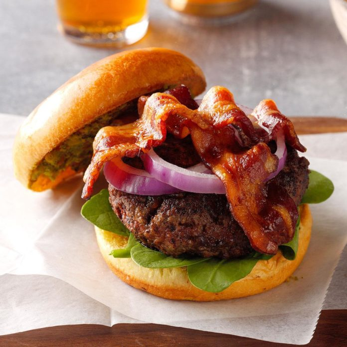

WATERFALL GARDENS
About
Our Inspiration
Autism Awareness was the original inspiration for our restaurant, Waterfall Gardens. Upon further research we discovered that people on the Autism Spectrum have a co-existing condition known as Sensory Processing Disorder which can effect anyone or a combination of senses. Going out to eat should be a positive experience not something to endure.
Our Goal
We aim to provide a comfortable soothing atmosphere along with food choices that are familiar and comforting. We aim to use local fresh organic products as often as possible. Dining areas are generously sized and situated to provide a relaxing atmosphere with plenty of comfort and privacy.

